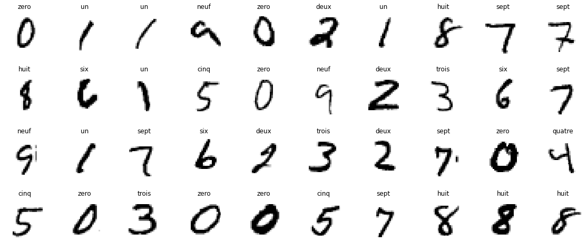

TP Module 1 : Introduction au deep learning, prise en main de TensorFlow et Keras
Le but de ce tp est ici de se familiariser avec TensorFlow et son API haut niveau Keras. Le but étant de vous familiariser avec TensorFlow, Keras, et aussi l'outil de travail Colab, n'hésitez pas à modifier le code que vous écrirez sur Colab pour voir les changements.
Bash
Google Colab est aussi capable de comprendre la plupart des commandes unix et shell que vous lui donnerez. Par exemple, comme Colab tourne avec des GPUs Nvidia, pour voir lequel vous est attribué, vous n'avez qu'à lancé la commande.
Avant de voir la création de modèles en tant que tel, discutons un peu de TensorFlow.
Tenseurs et opérations
L'objet de base dans TensorFlow est le tenseur. Si vous avez les connaissances de bases en algèbre linéaire, ça ne devrait pas être compliqué.
Un tenseur est un tableau multidimensionnel, tout comme l'équivalent Numpy avec ndarray.
- Un tenseur en dimension 0 correspond à un scalaire (un nombre),
- Un tenseur de dimension 1 correspond à un vecteur,
- Un tenseur de dimension 2 correspond à une matrice,
- Une fois que l'on commence à empiler des matrices ensemble dans un nouveau tableau, on obtient un tenseur en 3 dimensions, que l'on peut interpréter comme un cube de nombres.
Les opérations mathématiques possibles avec Numpy se font exactement de la même façon avec les tenseurs, et il se définissent exactement de la même manière. Il suffit principalement de remplacer np.array par tf.constant.
Exemple
On peut directement transformer un numpy array en tenseur TensorFlow.
Attention
Comme vous le verrez en tapant ces lignes de code, le type n'est pas le même, pour tf_a le type est hérité de Numpy, les entiers de tf.constant sont au type int32. Comme pour Numpy on peut changer le type des tenseurs.
Exercice
Ecrire comme un tenseur la matrice \(2 \times 3\) suivante :
des 2 façons possibles :
- Ecrire sous la forme d'un ndarray Numpy puis le convertir,
- Directement via tf.constant
Via les commandes shape et dtype, afficher la forme et le data type de de chacun, puis faire sorte que les 2 façons coïncident.
- Via Numpy.
- Conversion vers
tf.constant.
- Directement via TensorFlow.
TensorFlow
- Vérification.
TensorFlow
Exercice
A l'aide de la commande tf.reshape, modifier
en un tenseur de forme \((3,2)\).
TensorFlow
D'autres opération classique dans Numpy existe aussi dans TensorFlow, comme la transposée.
Le produit matriciel avec la commande @.
TensorFlow
Une des options de la commande tf.reshape qui sera utile par la suite, et le fait de ne pouvoir que partiellement spécifier les dimensions. Mettre un \(-1\) dans un des axes permet de le spécifier par rapport aux autres dimensions.
Anatomie d'un réseau de neurones
Keras est l'API de haut niveau de Tensorflow, elle facilite la contruction des réseaux de neurones en automatisant beaucoup de pratiques, comme la rétropropagation du gradient.
Entraîner un réseau de neurones dépend des paramètres suivants :
- Les couches de neurones, qui se combinent en un réseau (ou modèle),
- Les données : les observations et les cibles correspondantes,
- La fonction de perte, qui définira le gradient à calculer,
- la méthode d'optimisation, pour la descente du gradient.
L'ensemble des couches de neurones nécessaires à la constitution des réseaux se trouve dans la partie tensorflow.keras.layers de la librairie Tensorflow. Par exemple, appelons une couches de neurones denses avec 10 neurones dedans.
Toutes ces méthodes, pour appeler la couche dense sont identiques :
- dans le premier cas on a importé les couches Dense depuis
from tensorflow.keras.layers import Dense, - dans le deuxième cas, on a importé keras via from
tensorflow import keras, - dans le dernier cas, on a importé Tensorflow via
import tensorflow as tf.
Les couches que l'on utiliserons dans ce TP seront les couches :
InputDenseActivationFlatten
On importe ces couches via les commandes suivantes.
Il existe 3 façons de construire des modèles avec Tensorflow via Keras :
- L'API Séquentielle,
- L'API Fonctionelle,
- L'API Subclassing.
API séquentielle
Pour construire un modèle à partir de l'API séquentielle, on procède la façon suivante :
Décrivons plus en avant les parties de ce code.
-
model = models.Sequential([....], name='nom_du_modèle')instancie le modèle séquentiel, c'est à l'intérieur des crochets que l'on définit la topologie du modèle. -
InputLayer(input_shape=(dim))est toujours la première couche d'entrée à mettre dans le cas d'un modèle séquentiel, c'est la couche qui va prendre en entrée les données pour ensuite les faire passer dans le modèle. Il est nécessaire de préciser les dimensions des données d'entrées via le paramètres input_shape. -
Couche_n(params)correspond aux différentes couches que l'on peut mettre dans l'archtecture du neurones. Pour l'instant nous travaillerons avec les deux couches suivantes :- Les couches de neurones denses,
- Les couches de fonction d'activations.
N'hésitez pas à vous reporter à la documentation de l'API Séquentielle de Tensorlfow, notamment sur les deux couches qui nous intéressent :
Exemple : Perceptron
la commande model.summary() permet d'avoir un récapitulatif de l'architecture du réseau, en particuliers le nombre de paramètres du réseau, ici on en a 11. Voici ce que l'on obtient en appelant cette commande.
Avec le code précedent, on a instancié un réseau contenant :
- 10 entrées,
- 1 neurone,
- 1 fonction d'activation sigmoïde à la fin.
On a donc ici un modèle de Perceptron.
API fonctionnelle
Pour construire un modèle à partir de l'API fonctionnelle, on procède de la façon suivante :
Ici comme le suppose le nom de l'API, chaque couche est alors considérée comme une fonction. On empile alors les couches comme l'on compose les fonctions.
Les modèles créés via l'API séquentielle pouvant être bien plus complexes qu'un simple modèle séquentiel, avec par exemple plusieurs entrées et sorties. Pour instancier le modèle il est donc nécessaire de lui préciser quelles sont les entrées et sorties via la commande
model = Model(inputs=inputs, outputs=output)
Une fois que l'architecture du modèle est définie, qu'elle soit faite à partir de l'API séquentielle ou de l'API fonctionnelle ne change rien. Les méthodes pour compiler le modèle et l'entraîner sont les mêmes.
Exercice : Perceptron
Réécrivez le modèle du Perceptron via l'API fonctionnelle.
TensorFlow
Exercice
- Construire un modèle via l'API Séquentielle avec les couches suivantes :
TensorFlow
- Combien de paramètres ce modèles possède-t-il ?
TensorFlow
- Refaire le même modèle avec l'API fonctionnelle.
TensorFlow
Weights & Biases
Il est possible de nommer les couches des réseaux, ainsi on peut les analyser de façon unique avec la commande get_layer(). Par exemple, pour observer la couche nommée 'dense1' dans le modèle, on peut faire comme suit :
On obtient un résultat comme suit.
Ou alors, on peut directement les appeler via leur numero de couche et l'attribut model.layer, la couche 0 étant la première en haut.
Compilation du modèle, lancement de l'apprentissage : MNIST Dataset
Le dataset MNIST des chiffres manuscrits, comporte un ensemble d'entraînement de \(60 000\) exemples, et un ensemble de test de \(10 000\) exemples. Les chiffres ont été normalisés en taille et centrés dans une image de taille fixe.
C'est une bonne base de données pour les personnes qui veulent essayer des techniques d'apprentissage sur des données du monde réel tout en dépensant un minimum d'efforts en prétraitement et en formatage.
C'est aussi et surtout l'un des datasets les plus utilisés au monde dans la recherche académique pour faire du benchmark de modèle.
Importons cette base de données et regardons à quoi ressemble un exemple.


Le dataset comprend donc des images des chiffres de \(0\) à \(9\), (des tenseurs 3D) de dimension \(28 \times 28\) en niveau de gris (le dernier \(1\) dans la valeur de X_train.shape).
Le but est ici de construire un classifieur, de telle sorte qu'il soit capable de nous prédire une fois entraîné la bonne valeur du chiffre qui lui sera présenté.
Ici, on triche un peu, les réseaux dense ne sont pas spécialisés dans le traîtement des images, c'est pour cela qu'une fois l'input passée, on ajoute la couche Flatten() qui va se charger d'applatir l'image en un vecteur de dimension \(28\times28\times1 = 784\).
C'est une couche très importante que nous continuerons de rencontrer très fréquemment dans la suite des modules.
Pour finaliser le modèle, on a 3 hyperparamètres à lui faire passer via la commande model.compile():
- La fonction de perte utilisée, qui sera utilisée pour optimiser les poids et les biais du réseau lors de la rétropropagation,
- La méthode d'optimisation utilisée pour la descente du gradient stochastique,
- Les métriques de précision qui seront utilisés pour évaluer le modèle.
Mathématiquement, il n'y a pas de relations entre entre la fonction de perte et les métriques de précision.
La perte peut être considérée comme une distance entre les vraies valeurs du problème et les valeurs prédites par le modèle. Plus la perte est importante, plus les erreurs que vous avez commises sur les données sont énormes.
La précision peut être considérée comme le pourcentage d'erreurs que vous avez faites sur les données.
Cela signifie que :
- Une faible précision et une perte énorme signifient que vous avez fait d'énormes erreurs sur un grand nombre de données
- Une faible précision mais une faible perte signifie que vous avez fait peu d'erreurs sur un grand nombre de données
- Une grande précision avec peu de pertes signifie que vous avez fait peu d'erreurs sur quelques données (dans le meilleur des cas)
- Une grande précision mais une perte énorme, signifie que vous avez fait d'énormes erreurs sur quelques données.
Lancer l'entraînement du modèle se fait via la commande model.fit(). On a alors plusieurs paramètres à rentrer :
X_train,y_train, qui sont les données sur lesquelles va s'entraîner le modèle,epochcorrespond au nombre d'époques pour l'entraînement du modèle. On rappelle qu'une époque correspond à un passage complet du dataset d'entraînement dans le modèle.batch_sizequi correspond au nombre d'observations utilisées pour effectuer la descente du gradient, ie la taillle du minibatchvalidation_datadonnées sur lesquelles évaluer la perte et les métriques de précision du modèle à la fin de chaque époque. Le modèle ne sera pas entraîné sur ces données.
Une fois l'entraînement terminé, voyons comment s'en est sorti ce modèle.
Vous devriez obtenir un graphe similaire.

Sur ce graphe, on observe l'évolution de la fonction de perte et la précision à la fois sur le dataset d'entraînement et sur le dataset de validation, au fil des époques. C'est un graphe utile pour juger si oui ou non notre modèle est en sur-apprentissage.
Evaluons maintenant notre modèle sur le jeu de test.
Autre méthode : One hot Encoding
Ici y_train va de \(0\) à \(9\), or ces données ne sont pas des données ordinales, il n'y a pas de relations d'ordre dedans cela représente juste le nombre attendu. En les laissant comme ça, l'algorithme pourrait apprendre une représentation hiérarchique des données là où il n'y en pas.
La bonne pratique est alors de transformer ces labels, en leur appliquant une transformation dite de "One hot encoding" (encore une fois, le terme français est manquant). De \(0\) à \(9\), on a \(10\) chiffres, chaque nombre va donc être remplacé par sa coordonnée correspondante dans \(\mathbf{R}^{10}\). Ainsi, on aura la transformation suivante.
En faisant ça, il faut alors changer la fonction de perte pour la faire correspondre au format de \(y\).
Vous devriez obtenir un graphe similaire.

On arrive donc à avoir des résultats relativement bon, même avec des neurones qui ne sont pas spécialisés dans le traitement de l'image.
Mais nous sommes loin de l'état de l'art qui est aux alentours de \(99,9\%\) sur MNIST.
Exercice
Prenez en main cet exemple, changez le nombre de couches, le nombres de neurones, essayez avec ou sans one hot encoding. Créer votre classifieur de nombre.
CIFAR-10 Dataset
Le dataset CIFAR-10 comprend 60000 images couleur \(32\times32\) réparties en \(10\) classes, avec \(6000\) images par classe. Il y a \(50000\) images d'entraînement et \(10000\) images de test.
Le dataset est divisé en un dataset d'entraînement et un dataset de test, contenant \(50000\) images pour le dataset d'entraînement, le dataset de test contient exactement \(1000\) images sélectionnées au hasard dans chaque classe.
Les classes présentes dans le dataset sont les suivantes, chacunes représentées par un chiffre de 0 à 9. Dans l'ordre nous avons :
- airplane
- automobile
- bird
- cat
- deer
- dog
- frog
- horse
- ship
- truck
C'est aussi un dataset très connu pour faire du benchmark de modèle dans le milieu académique. Visualisons un peu ce que cela donne.

Exercice
Sous quelle forme sont codées les labels de y_train, y_test, y_valid ?
Exercice
Le dataset a été chargé, partagé en train, validation, test. A vous de jouer, construisez une réseau de neurones pour classifer ces images.
- Le nombres de couches de neurones,
- Le nombres de neurones dans chaque couche,
- Si oui ou non
y_train,y_test,y_validsont au format one_hot, - Le nombre d'époque,
- La taille du batch.
Tout cela dépend de vous, le squelette est là, à vous de le remplir.
TensorFlow
Ayant \(10\) classes différentes, un choix au hasard donnerait une précision de l'ordre de \(10\%\), le réseau fait donc mieux que choisir une classe au hasard.
Cependant on est clairement en sur-apprentissage, la fonction de perte sur le dataset d'entraînement ne fait que baisser, ce qui est normal puisque l'on optimise les poids pour à chaque étape mais :
- La fonction de perte sur le dataset de validation grimpe en flêche,
- La précision sur le dataset de validation reste bloqué à \(50\%\).
Pour résumer,
Le modèle à appris par coeur les photos qu'il a pour s'entraîner, mais si on lui donne une photo au hasard du dataset de validation, il a une chance sur deux de se tromper.
Exemple : Overfit sur une régression linéaire

Conclusions
Pour résumer, la contruction d'un modèle se divise en ces étapes :
- (Collecte et mise en forme de la donnée),
- Mise en place de l'architecture : API séquentielle/fonctionelle,
- Définition du triplet [Perte, Optimiseur, Métrique],
- Définition de la commande
model.fit()
Il semble apparent, et cela sera récurrant par la suite, que le nombre de neurones dans les couches cachées ne peut s'exprimer qu'en multiple de \(32\) : \(32\), \(64\), \(128\), \(256\), \(512 \dots\) Aucun théorème mathématique ne vient soutenir cette hypothèse.
Le fait de choisir des multiples de \(32\) (des puissances de \(2\)) pour le nombres de neurones est plus une tradition et une convention informatique qu'autre chose. Si dans une moindre mesure, il est vrai que pour des neurones convolutifs (que nous verrons dans le module suivant) cela peut aider au niveau de la vitesse d'entraînement car les algorithmes de transformée de Fourier rapide fonctionnent mieux avec un échantillonage en 2^n, c'est pas le cas du reste.